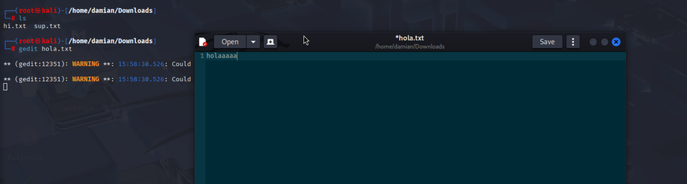

Viewing/Creating/Editing Files
echo string > example.txt: Creates (or replaces if currently existing) a file with the contents of the specified string.
cat: Reads the text of the specified file
It's important to note that echo string > example.txt replaces the contents of example.txt with string but echo string >> example.txt appends the contents of example.txt with string.
touch: creates a file, not nessasarely with any contents
nano: creates a file and allows you to edit it on the terminal
gedit: creates a text file and allows you to edit it on a GUI:
apt update and apt upgrade checks your software for updates (apt update) and upgrades stuff (apt upgrade)